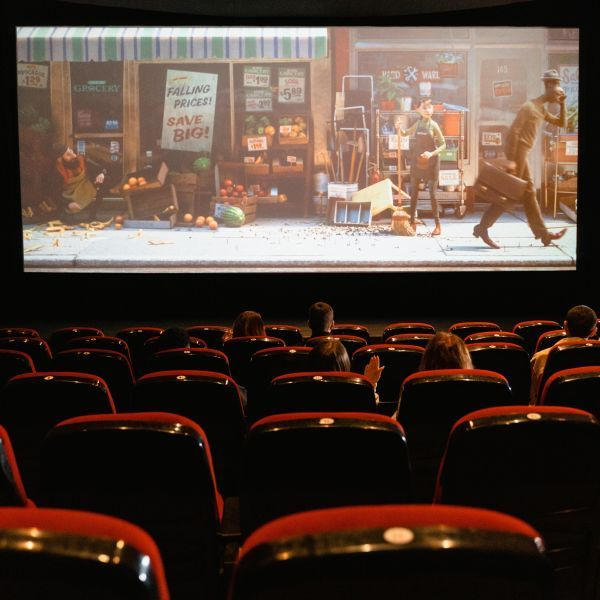

Volver al Inicio
Conocenos
Somos dos jóvenes apasionados por el cine de San Luis, Argentina. Nos encanta ir al cine, ver películas nuevas y discutir sobre ellas. Creemos que el cine es una forma de arte poderosa que puede transportarnos a diferentes mundos, lugares, momentos incluso sentir una amplia gama de emociones y enseñarnos cosas nuevas sobre nosotros mismos y el mundo que nos rodea.

Este sitio web es nuestro espacio para compartir nuestra pasión por el cine con otros. Aquí encontrarás reseñas de películas nuevas y antiguas, artículos sobre la industria cinematográfica y más. Esperamos que este sitio web te sirva como un recurso para descubrir nuevas películas que te gusten y para adentrarte en el mundo del cine!